ZooKeeper源码分析(三) - 会话管理
创建会话
当有新的连接请求时，NIOServerCnxn 会检查 ConnectRequest 携带的 sessionId。如果为 0，那么 ZooKeeper 会为这个连接创建一个新的 Session，而在 Session 确定为有效之前，这个时候不会尝试从客户端读取任何数据:
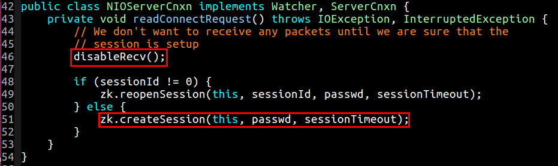
ZooKeeper 中的会话机制由 SessionTrackerImpl 来实现和管理。SessionTrackerImpl 继承了 Thread 线程，在其构造函数内部，默认调用了 start 方法。当 ZooKeeperServer 实例化 SessionTrackerImpl 就会作为一个单独的线程运行起来:
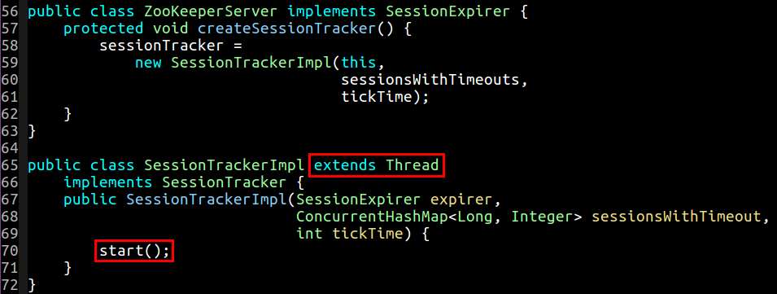
我们看一下 Session 是如何被创建的:
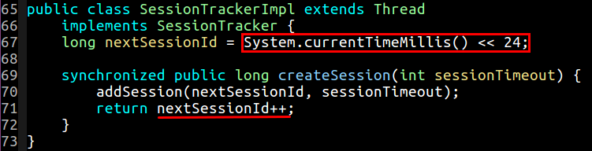
ZooKeeper 选用系统当前时间，然后右移 24 位作为会话的起始 Id，之后，每多一个连接，这个起始会话 Id，就会加 1，以此分配给不同的连接。创建完成的 Session 会以 sessionId 作为键，session 最为值存放到 sessionsById 这个字典中。
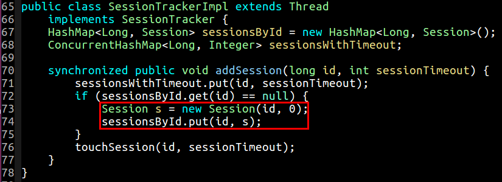
重新打开会话
什么情况下客户端发送过来的 sessionId 不是为 0 呢，答案就是之前客户端连接过某服务器 (假设为 A)，从 A 服务器成功分配过 sessionId，但是 A 服务器之后由于某种原因退出了，这个时候客户端会重新选择新的服务器进行连接，然后拿着这个从 A 服务器分配的 sessionId 继续连接 B 服务器，这个时候 B 服务器会检测到 sessionId 不为 0，ZooKeeperServer 会尝试重新打开会话:
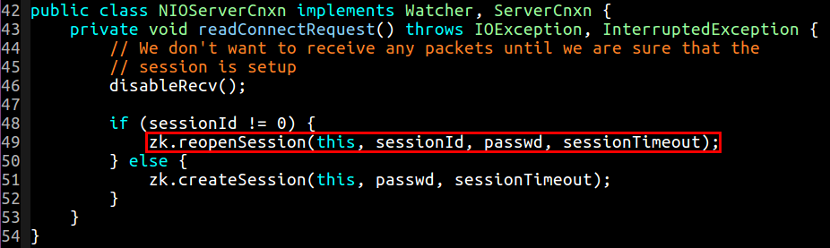
这个时候，ZooKeeperServer 会对来访者的这个会话标识进行认证，让它证明自己是合法连接，怎么证明呢，就是使用 ConnectRequest 传入的 16 字节的 passwd 来认证:
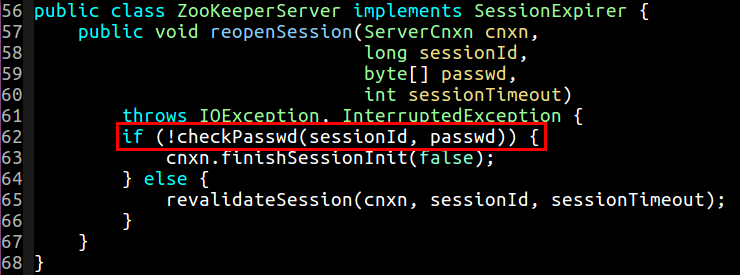
如果之前创建调用 createSession 成功过的话，那么 passwd 会随着 ConnectResponse 回传到客户端，客户端然后再更新自己本地的 sessionPasswd。其中 passwd 与 sessionId 息息相关，具体生成规则如下:
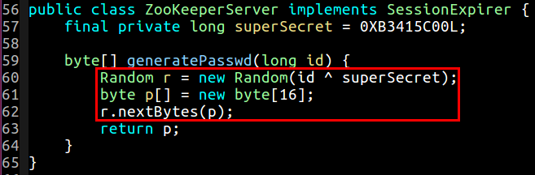
现在 ZooKeeperServer 要对这个客户端携带的 passwd 进行有效性检测:
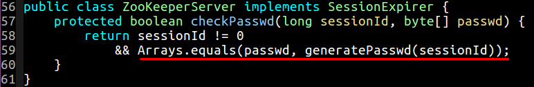
如果检测失败，那么直接调用 finishSessionInit(false) 通知客户端认证失败；如果成功，那么会调用 revalidateSession 来刷新 session:
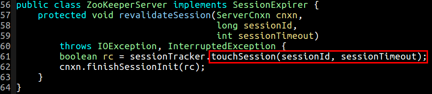
会话超时
在创建会话的时候，我们注意到其通过 new Session(id, 0) 来创建的会话，参数 0 代表的是这个新建会话的 tickTime 为 0。tickTime 代表的是一个会话能够维持多长时间，如果其超过指定的过期时间 expireTime，那么就要删除掉这个会话。比如设定的会话的持续时间为 10 分钟，随着时间的增加，expireTime 也在一直增加，逐渐逼近 10 分钟，当超过以后，就要删除这个会话，认为这个会话过期了，失效了。
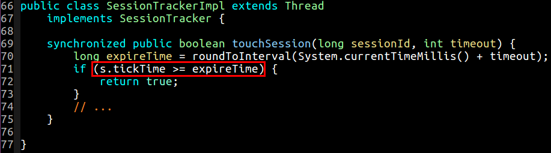
在 SessionTrackerImpl 的内部，ZooKeeper 按照会话的 tickTime 的不同，来将不同的会话放入相同的 SessionSet 中。如图所示，左侧维持的都是能够持续 5 分钟的会话，中间维持的都是能够持续 10 分钟的…… 当超时之后，从相应的 SessionSet 中移除这个会话，并设置新的 tickTime 来放入新的 SessionSet 中。注意，不存在 tickTime 为 0 的 SessionSet，如果为 0 则代表新创建成功。
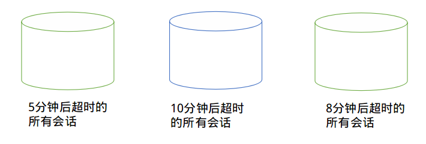
上述源码如下:
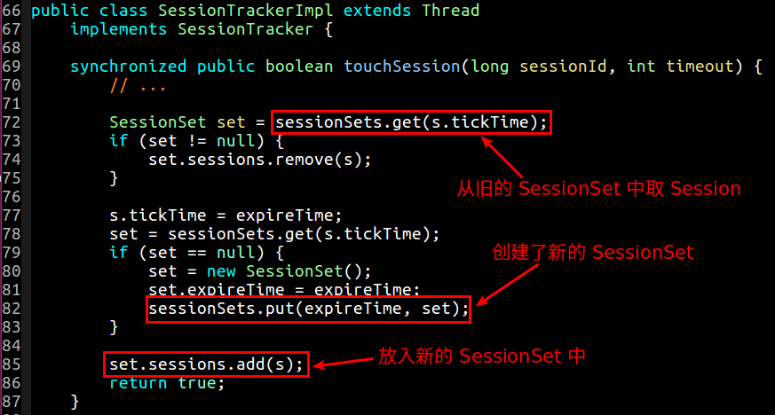
当然在源码的实现中，tickTime 存储的并不是像 5 分钟，10 分钟这样的时间间隔，而是一个时间点，即它能维持的会话有效的时间点。时间在不停地向前行走，那么旧的 SessionSet 被逐渐销毁，新的 SessionSet 被创建出来:
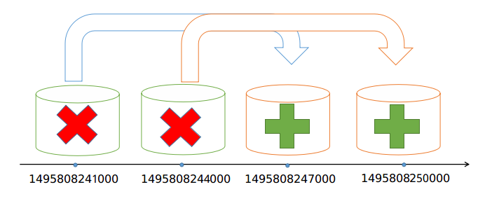
销毁 SessionSet 的过程是在 run 方法中做的:
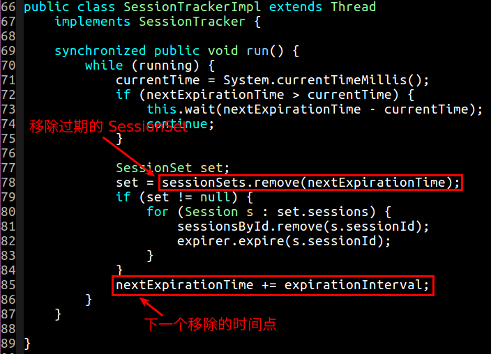
我们注意到，当在销毁 SessionSet 的时候，其会对位于 SessionSet 中的所有会话做两件事:
- 从
sessionsById中移除这个会话 - 使用
expirer通知这个会话过期
expire 方法的实现在是写在 ZooKeeperServer 中的，ZooKeeperServer 实现了 SessionExpirer 接口，并在创建 SessionTracker 实现的时候，将 ZooKeeperServer 本身作为构造器参数传入了进来，因此我们查看位于 ZooKeeperServer 内部的 expire 方法即可:
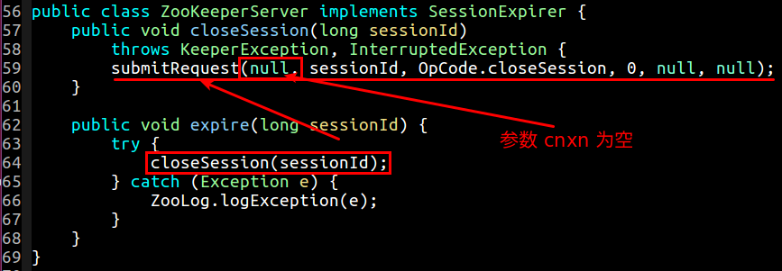
哦… 原来当移除 SessionSet 的时候，还对每一个会话都提交了一个 OpCode.closeSession 请求啊。另外这个地方，还应该注意的是 submitRequest 方法传递的 cnxn 参数为 null，下面会用到这个的。
当提交请求后，OpCode.closeSession 请求沿着调用链:
PreRequestProcessorSyncRequestProcessorFinalRequestProcessor
向前行进，在 PreRequestProcessor 中创建了一个 TxnHeader 对象对参数等进行一些封装。再交由 FinalRequestProcessor 进行处理 ( SyncRequestProcessor 对其执行逻辑无干扰，我们这里先跳过这个处理器 ):
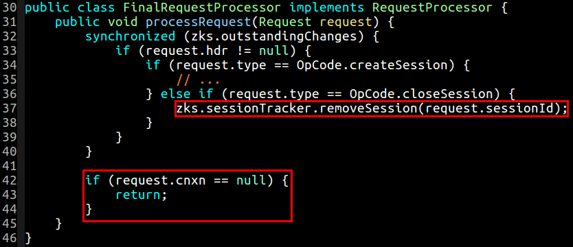
FinalRequestProcessor 当检测到其类型为 OpCode.closeSession 的时候，会调用 removeSession 来将这个会话从 ZooKeeperServer 中删除。removeSession 方法的具体实现如下:
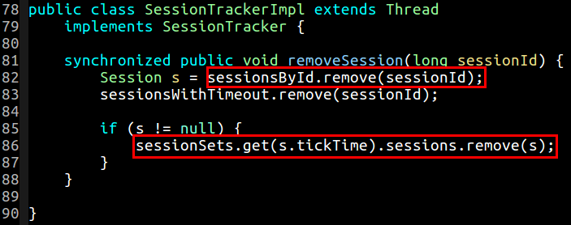
回到刚才，我们知道提交请求的时候，传递的参数 cnxn 为 null，那么上面你可以看到 FinalRequestProcessor 在检测到 cnxn 为 null 的时候，会直接 return。也就是说 OpCode.closeSession 的响应并不会发送给客户端。一般而言，当行走到 closeSesison 的时候，这也就意味着客户端出现了问题，再下一节我们会看到客户端和服务器会不停的依靠心跳检测来不停地激活这个会话，当服务器检测到某个会话超时之后，即没有即使地从旧的 SessionSet 中迁移到新的 SessionSet 中去，那么说明服务器已经没有收到客户端发来的心跳包了，因此会删除这个会话。
会话激活
时间的车轮滚滚向前，永不停止。在上一小节我们提到，SessionTrackerImpl 内部维持了一个 while (running) 循环，通过每隔一段时间向前行走一个指定的间隔 expirationInterval, 进而一个一个把旧的 SessionSet 给删除掉。我们也提到 ZooKeeperServer 通过 touchSession 方法进行会话迁移，及时地把一些存活的会话不停地转移到一个新的 SessionSet 中去，进而维持会话的有效性。那么是谁在调用 touchSession 内？谁在不停的迁移整个会话呢？答案就在心跳检测不停的 ping, ping, ping 中…
回到 NIOServerCnxn 类，当其读到一个请求的时候，其会立即将这个请求 submit 出去 (除了 OpCode.auth 请求)，如下代码所示:
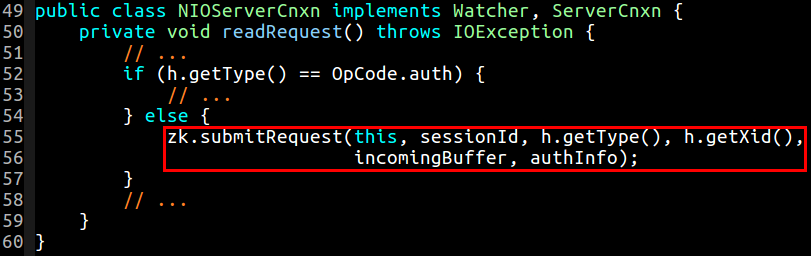
我们再往下看 submitRequest 方法:
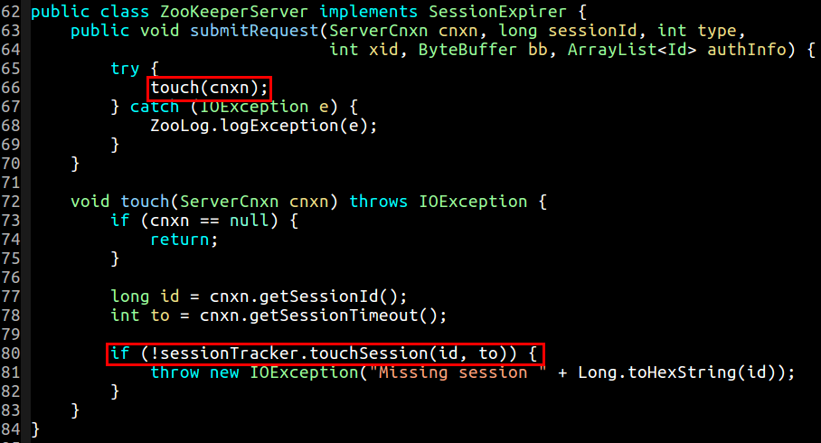
我们会发现在每次 submitRequest 的时候，都会去调用 touchSession 方法，看这个会话是否需要迁移，客户端发来的每一种不同的操作类型 (除 OpCode.auth 类型) ，例如 ping, setData, getData 等都会调用 touchSession 方法。我们将 touchSession 称之为会话激活，也即会话迁移。这里最重要的就是 ping 请求的提交。我们在上一章中提到过，客户端会不停的往服务器发送心跳包，于此同时，客户端会间隔性的激活这个会话。只要收到心跳包不止，服务器就始终认为这个会话存在，始终认为其仍然有效。那些没有及时发送、或者因为网络原因断掉的客户端只能因为没有进行会话迁移而被服务器移除会话请单，可见维持好网络的畅通无阻，尽量保证延时时间的间隔要小是一件非常重要的事情。